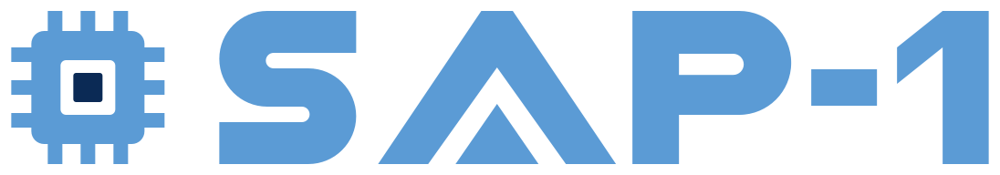
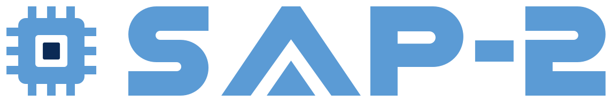

- Documentation
- Open the laboratory
- Offline version (2347 kB)
Documentation
The guide of each laboratory, and a single-file version of it that runs offline: save the file and open it in a browser.
Laboratories
- Documentation
- Open the laboratory
- Offline version (1272 kB)
In RISC-V
- Documentation: not yet available
- Open the laboratory
- No separate offline version


- Documentation
- Open the laboratory
- Offline version (1565 kB)
This release
- Release
- 1.3.0, 2026-11-06
- Laboratories
- RISC-V Laboratory, SAP-1 Laboratory, SAP-2 Laboratory, Armv7 Laboratory, GPU Laboratory
- Tested browsers
- Chrome 156, Edge 151. Only the browsers listed were tested.
- Download
- The laboratories and the complete site, to run on your own computer
- Validation record
- web-sim-validation.json
- Source
- https://github.com/sajidbuet/mavilera
A simulation is a teaching model; it is not evidence of how a hardware implementation behaves.